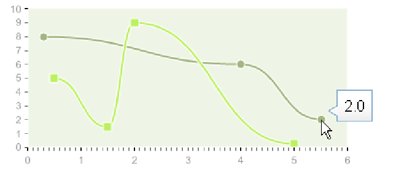

4.7.2 EffectTooltip
The corresponding class is
com.objetdirect.tatami.client.charting.effects.EffectTooltip
The basic Tooltip effect will show the point (or slice/bar/column/bubble...) value
in a tooltip.
Example :
plot.addEffect(
new EffectTooltip());
But the Point, Bubble and PiePiece data objects each offer a way to give a
custom tooltip to the data. They implement the HasTooltip interface:
package com.objetdirect.tatami.client.charting;
public interface HasTooltip {
public String getTooltip();
public void setTooltip(String tooltip);
}
Moreover, they each have a constructor taking this tooltip into account
:
public Bubble(
double x,
double y ,
double size,String tooltip)
public Point(
double x,
double y , String tooltip)
public PiePiece(
double value , String
label,String color, String fontColor, String tooltip)
Example :
Point[] points =
new Point[]{
new Point(0.3,8.0),
new Point(4.,6.,"Custom␣tooltip"),
new Point(5.5,2.)};
Serie<Point> serie =
new Serie<Point>(Arrays.asList(points2), "Serie␣2");
plot.addSerie(serie);
plot.addEffect(
new EffectTooltip());
